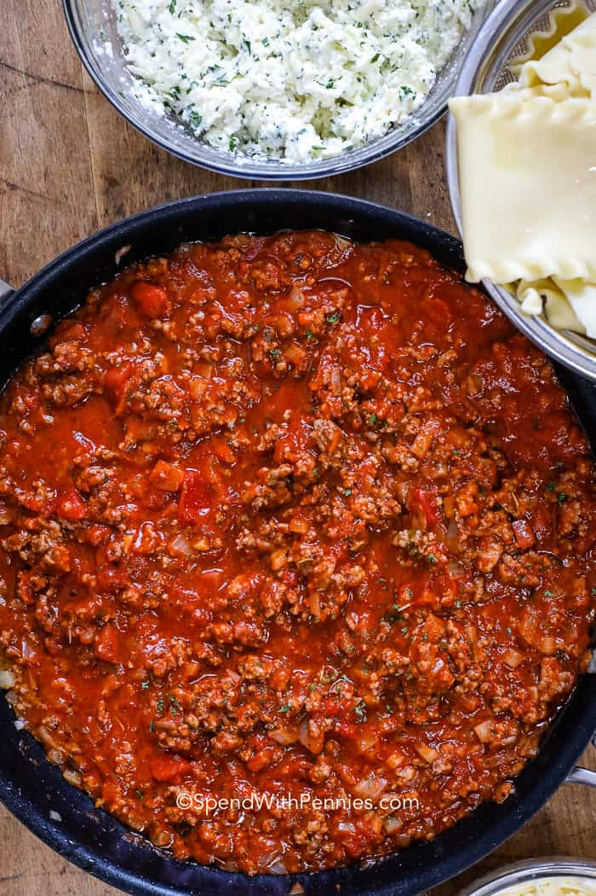

Remember when you were a kid and a "bad day" was getting friction burn while going down the playground slide too fast? You'd cry and get an adults attention who would then immediately take you into the office, pour some rubbing alcohol on the burn followed by a bandaid?
Those were the good ol days; days when you didn't have any responsibility and were allowed to breakdown and give up for the time being while an adult took care of you. That doesn't happen anymore, but that doesn't mean you can't revert to a child-like state after a long day by making some delicious homemade lasagna just like grandpappy used to make.
Temporarily escape from the present and sit in blissful ignorance as the taste of this delicious lasagna takes you down nastalgia lane.
Homemade lasagna may have a few steps, but each step is easy – and I assure you it’s worth the time; the perfect Italian meal!
The ingredients in this recipe are all things you know and it’s not difficult at all! All you’ll need for this easy lasagna recipe is one pan, one bowl, and a 9×13 baking dish!
A quick overview of the layers:
To make a spinach lasagna, squeeze out most of the moisture of defrosted frozen spinach and add it along with the cheese layer. Lasagna ingredients don’t have to be limited to the ones you see here.
Substitute meats or different cheeses, or tru different meat sauce variations
Once you have prepared the meat sauce and cheesesm you're ready to layer. This is the order of layers: